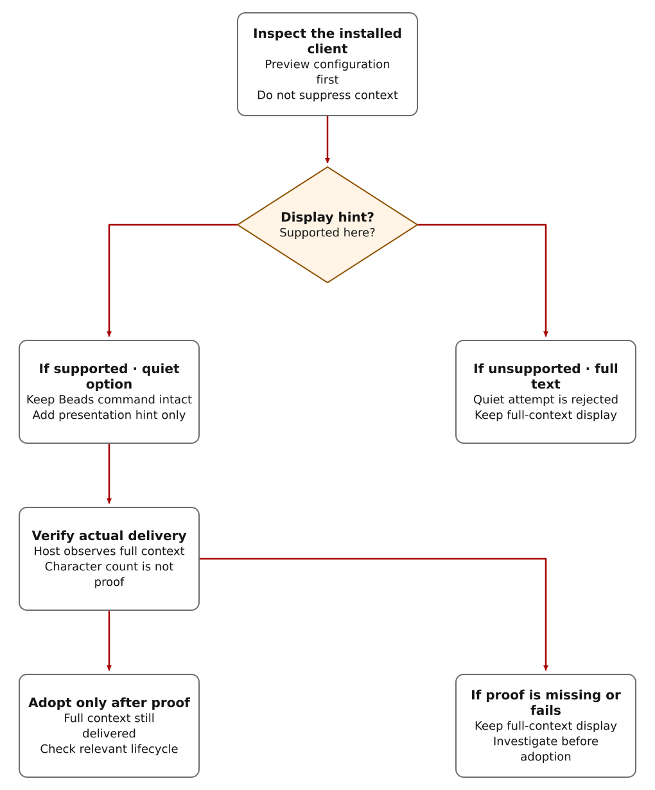

Hide the display, not the project context
Beads startup hooks provide saved project context before the agent acts. A noisy terminal is a presentation problem; dropping that context can leave a new or compacted session without the earlier decisions.
Hide only the terminal display, not the context supplied to the model. Keep
bd codex-hook SessionStart as the full-context path
unless the installed Codex binary supports a stable
visibilityHint hook field that hides presentation
without changing hookSpecificOutput.additionalContext.
Choose a display mode supported by your client
bd codex-hook lifecycle commands and accepts visible output when Codex cannot hide it safely.
visibilityHint: "quiet" only when support is detected or forced by an operator.
visibilityHint: "verbose" for inspection on supported Codex builds.
--allow-degraded-context because it is not equivalent to full Beads context.
Preview changes before applying them
Run these commands from the CWO source checkout. --project-dir identifies the project whose hooks would change; . means the current source checkout in these examples. Replace it with the intended project path before using --apply. The helper may live in a different checkout from that target. It previews by default, preserves unrelated hooks and replaces only managed Beads lifecycle hooks when applied.
python3 scripts/configure_codex_beads_hooks.py \
--project-dir . \
--mode full-context \
--jsonOn a Codex build with the stable display hint, quiet mode keeps the Beads commands unchanged and adds only the presentation hint:
python3 scripts/configure_codex_beads_hooks.py \
--project-dir . \
--mode quiet \
--apply
On unsupported Codex builds, quiet mode fails closed. The result
includes the Codex version, inspected binary paths, and support
signal so the operator can upgrade Codex or keep
full-context.

Read the diagram as text
- Inspect the installed client and preview changes. If a stable display hint is supported, the quiet option retains the Beads command and adds only a presentation hint. If support is absent, quiet mode is rejected; keep full-context display.
- Supported configuration is not delivery proof. Before adopting quiet display, obtain host-observed evidence that the full context still reaches the model. Compare content and relevant lifecycle delivery; a character count does not prove equality or delivery.
- Adopt only after that evidence succeeds. If it is missing or fails, keep full-context display and investigate. Full-context configuration alone also does not establish that every lifecycle event has been delivered.
- This diagram does not apply a hook configuration. The commands are selectable examples; installation or changes to a live setup require their own authority.
Give subagents a checked project brief
Internal subagents need saved task context too, but hook support must be verified. Beads 1.0.5 does not support the SubagentStart Codex hook event. Use scripts/build_beads_brief.py and the internal brief procedure; outside reviewers still receive only boundary-checked contractor packets.
Check that the model receives the same context
The character count below is a diagnostic for one context value, not proof that two values are equal or that a model received them. The helper tests assert that quiet mode keeps each bd codex-hook command unchanged and adds the display hint. They do not establish live delivery into Codex. Before adopting quiet mode on a host, verify that the client still delivers the complete hookSpecificOutput.additionalContext; otherwise keep full-context. Unsupported quiet mode must fail closed.
SESSION_CONTEXT="$(python3 scripts/cwo.py temp path --purpose beads-hooks --name beads-sessionstart.json)"
bd codex-hook SessionStart > "$SESSION_CONTEXT"
jq -r '.hookSpecificOutput.additionalContext' "$SESSION_CONTEXT" | wc -c
python3 scripts/configure_codex_beads_hooks.py --mode quiet --json
python -m unittest tests/test_configure_codex_beads_hooks.py -v